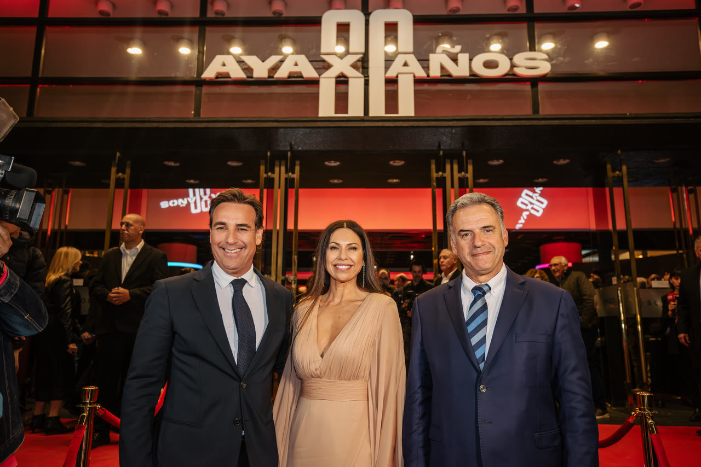

Prensa — Alejandro Curcio
Más de 40 notas relevadas entre 2005 y 2026. Esto es lo que se dijo, y lo que se dijo importa.
Ver la prensa
Lo que no admite discusión.
Tres reconocimientos, tres oficios distintos: el negocio, la aventura física, la creatividad publicitaria. Ninguno se hereda — se gana.

Tres décadas de oficio, en sus propias palabras.
23 notas destacadas, filtradas de 45 relevadas entre 2005 y 2026. La prensa no cuenta una historia lineal — cuenta intentos, caídas, reinvenciones.
- El País La tecnología ayuda; la diferencia la hace una decisión humana
- El País Ayax lanza en Uruguay el Toyota bZ4X, su primer SUV eléctrico japonés
- El Observador Llegó a Uruguay el primer eléctrico japonés de Toyota: el bZ4X
- Forbes Uruguay Llegó a Uruguay el primer auto eléctrico japonés: Toyota presentó el bZ4X
- Autoblog Uruguay Lanzamiento Toyota bZ4X: los apuntes del evento en Uruguay
- Forbes Uruguay Innovación, resiliencia y legado: los 80 años de Ayax
- El País Un puente entre el pasado que nos honra y un futuro que nos desafía: 80 años de Ayax
- Forbes Uruguay Alejandro Curcio: En el fondo lo que me encanta es la aventura, el descubrimiento y la curiosidad por generar valor
- El Observador Ayax: 80 años de historia viva, valores firmes y mirada al futuro
Ver todo +22 notas más
- Caras Uruguay Ayax celebró 80 años con una gala histórica en el Sodre
- Búsqueda / Galería Ayax celebró sus 80 años fiel a su estilo innovador
- El País Una gala histórica para celebrar los 80 años de Ayax con la presencia del presidente Yamandú Orsi
- El Observador Los 80 años de Ayax: cómo fue la celebración
- InfoNegocios AYAX celebró 80 años con una gala histórica en el Sodre
- El Observador Toyota y Suzuki: crecimiento sostenido, innovación y servicio
- El Observador Un camino posible hacia la sostenibilidad: Ayax y la apuesta por los híbridos
- Forbes Uruguay El Nido: el proyecto inmobiliario uruguayo
- El País Alejandro Curcio en la Facultad de Ingeniería de la Universidad de Montevideo
- El Observador Alejandro Curcio participó como orador en la FIUM
- Montevideo Portal Inspirando al futuro: meetup sobre movilidad en la FIUM
- Montevideo Portal MiAuto de Santander invitó a especialistas a analizar el mercado automotor
Los números no opinan.
Estas notas recorren tres décadas de oficio: crisis que templaron, libros que abrieron preguntas, una empresa que cumplió 80 años sin jubilarse. No hay acá una biografía armada por otros; hay un diálogo público sostenido en el tiempo, con nombres, fechas y decisiones concretas.
¿Sos periodista? Hablemos directamente.
Sin gabinete de prensa ni respuestas guionadas. Para entrevistas, notas o verificar un dato, el canal es directo.
Contacto de prensa